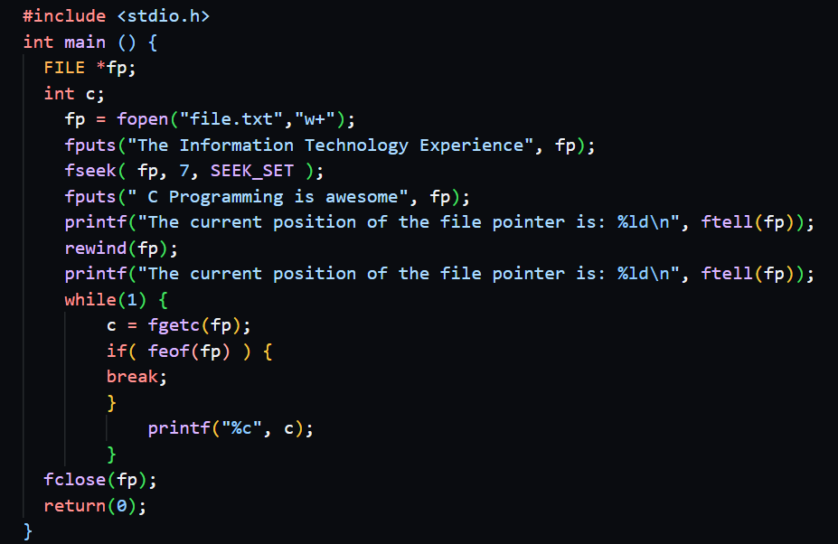

December 3, 2022
Read Time: 4 mins 49 secs
Word Count: 1145

A record is a collection of fields for a single entity. For example, a student's record may contain the student's id number, first name, last name, date of birth, and GPA. Each student's record would
all contain the same fields but the information
may be different for each.
A field is a collection of bytes that has meaning,
e.g. a student's age, or grade or last name. All of
these are individual fields.
A byte is the smallest unit of information in the file,
the entire file is seen as just a stream of bytes.
Two types of files in programming are Sequential Access Files & Random Access Files
Sequential access files
Sequential access files are essentially plain text files in which data is read from the beginning of the file until the desired information is found. Writing takes places at the beginning or at the end of the file (append mode). The information in the file is analyzed in sequence. This method of accessing the file is by far the most used among programmers due to its simple nature. The lengths of the records might all be different or could all be the same. Each record concludes with a unique character or characters. The file can start empty and grow.
Random access files
Random access files are usually binary files which allow data to be read or written from/to anywhere in the file. The file size is usually per-calculated fixed to the maximum amount of records the file will ever hold. Without looking at or scanning any other information that the file is presently storing, a specified segment of information within the record can be reached by the file pointer by navigating directly to it. Like a huge array of bytes kept in the file system, a random access file acts similarly. The term file pointer refers to a specific type of cursor or index into the inferred array; input operations read bytes beginning at the file pointer and advance the file pointer past the bytes read. Output procedures are also available if the random access file is generated in read/write mode; these actions write bytes beginning at the file pointer and advance the file pointer past the bytes written. The inferred array is expanded by output operations that write past its present end. The getFilePointer function may be used to read the file pointer, and the seek method can be used to set it.
Working with random access files
- Create and initialize the file with blank records. The number of blank records should be the maximum number of records the file will ever hold. Remember the file wont grow or shrink
- To write or update a record in the file, calculate where in the file the record is to be written the write the record to the file
- To read a record from the file, calculate where in the file the record is located, then read that record from the file
- The fopen() function is also used to open a random access file. The same modes used with sequential access files apply, but a 'b' is added to specify binary mode
- The fseek() function is used to position the file pointer to the required record position before a write or read takes place
- The fwrite() function writes records to the file
- The fread() function reads records from the file
- The fclose() function closes the file
Positioning the file pointer to the required record
- Start with the logical record number (1 to max records)
- Minus one from the logical record number
- Multiply by the size of a single record (remember all the records in a file have the same size)
- Use the result in the fseek() function. The result represents the actual location in the file (the byte position) where the actual record is located
- Use fseek(fp, sizeof(e) * (e.IdNo - 1), SEEK_SET);
- Where fp is the file pointer, e is a structure variable containing the data to be stored, IdNo is the logical record number, and SEEK_SET means to starting seeking from the beginning of the file
Opening a random access file
- Include the standard input/output library
- Declare a pointer of data type FILE
- Call the fopen() function with the name of the file and the mode it is to be opened in
- Format:
#include
FILE *filepointer;
filepointer = fopen(filename, mode); - NOTE: filename and mode are strings
- The fopen() function returns a FILE pointer
- If the requested file was opened successfully, the FILE pointer returned will contain a valid memory address
- If the open operation failed, the FILE pointer returned will contain NULL (0)
- It is good programming practice to test the FILE pointer returned to determine if the file open operation was successful
Modes used to open files in binary mode
- wb: Open a file for writing in binary mode. If the file already exists, erase its contents and start a new file. If the file doesn't exist, create and open a new file for writing
- ab: Open a file for appending in binary mode. If the file already exists. If the file doesn't exist, create and open a new file for writing
- rb: Open a file for reading in binary mode. The file must already exist.
- w+b: Open a file for both reading and writing in binary mode. If the file already exists, overwrite it.
- a+b: Open a file for both reading and writing in binary mode.
- r+b: Open a file for both reading and writing in binary mode.
Storing data in a random access file
To store data in the file:- The file must already be opened for writing
- You must have a FILE pointer pointing to the file and this pointer must not contain NULL
- Call the fwrite() function with the location of the data to be stored, the number of bytes from that location that will be stored, the amount of records (usually 1), and the FILE pointer
- Format: fwrite(location, number of bytes, amount, filepointer); eg. fwrite(&e, sizeof(e), 1, fp);
Retrieving data from a random access file
To retrieve data from the file:- The file must already be opened for reading
- You must have a FILE pointer pointing to the file and this pointer must not contain NULL
- Call the fread() function with the location where the data to be retrieved will be placed, the number of bytes to be retrieved, the amount of records (usually 1), and the FILE pointer.
- Format: fread(location, number of bytes, amount, filepointer); eg. fread(&e, sizeof(e), 1, fp);
Closing a random access file
- You should close a file when you are finished working with it – this frees/releases resources used
- The file must have already be opened
- You must have a FILE pointer pointing to the file and this pointer must not contain NULL
- Call the fclose() function with the FILE pointer
- Format: fclose(filepointer);